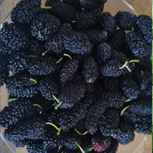
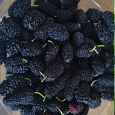

About Kleos Educational
Model Farm
The Kleos Educational Model Farm community of individuals and organizations interested in sustainable agriculture and animal farming. Our mission is to promote sustainable farming practices and advocate for policies that support sustainable food systems. We offer a place to experience the self-sustainable lifestyle.


Kleos Royal Labradors and other animals
At Kleos, students & visitors will be able to interact with Kleos Royal Labradors and meet Copper, Kori, Dolly, Ektor, Plato, Rea, Merfa & Canella as well as other animals, such as, goats, horses, chickens, to name a few! An ideal opportunity for VET students studying veterinary and/or animal care!
How does Kleos farm use traditional skills and permaculture for high-quality organic products?
At Kleos self-sustainable farm, we use a wide range of traditional skills to support life, focusing on producing over consuming. Some of the principles we apply are consistent with those of permaculture, that is, a self-sustainable farm makes use of everything on the homestead to create a symbiotic relationship where nothing goes to waste. To this extend, Kleos produces a variety of organic products of the highest quality & nutritional value for its residents as well as members of the local community and beyond.
 



What could the students do in the farm?
At Kleos, students & young adults have the opportunity to see in practice the theory taught in their school curriculum, while studying outdoors with ShipCon teachers and experts; in this way they will be able to comprehend important concepts covering a wide range of educational areas, while at the same time develop an affection and care for the flora and fauna. This is so important for the young generation, who will understand the value of nature and the longer-term benefits for people while at the same time equipped with valuable lifelong skills & knowledge.
We will find a job for every student
Furthermore, at Kleos we welcome Erasmus+ VET students from a wide range of fields, such as construction, maintenance, wood working, culinary, animal care, agriculture/agronomists, irrigation, to name a few, to do their practice/traineeship, in a truly wonderful environment.
It is worth noting that VET students will be accommodated in stone-built houses in which only natural materials are used, stone & wood!